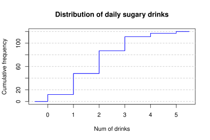
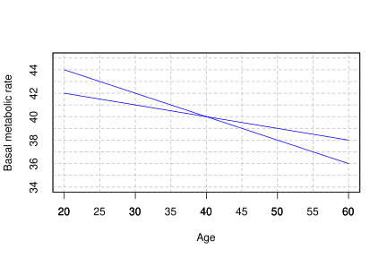

Pharmacy exam 2021-10-25 Degrees: Pharmacy, Biotechnology Date: October 25, 2021 Question 1 The table below shows the number of daily sugary drinks drunk by a sample of 16-years-old people. $$ \begin{array}{|c|r|r|r|r|} \hline \mbox{Drinks} & n_i & f_i & N_i & F_i\newline \hline 0 & & 0.1 & & \newline \hline 1 & & & 48 & \newline \hline 2 & & & & 0.725\newline \hline 3 & 24 & & & \newline \hline 4 & & & & 0.975\newline \hline 5 & & & 120 & \newline \hline \end{array} $$ Complete the table explaining how. Plot the cumulative frequency polygon. Are there outliers? Study the normality of the distribution. If another sample of 18-years-old people has a mean $2.1$ drinks and a variance $1.5$ drinks$^2$, in which distribution is more representative the mean? Who consumes a higher relative amount of sugary drinks, a 16-years-old who consumes 3 drinks a day or a 18-years-old who consumes 4? Use the following sums for the computations: $\sum x_i= 225$ drinks, $\sum x_i^2=579$ drinks$^2$, $\sum (x_i-\bar x)^3=80.16$ drinks$^3$ and $\sum (x_i-\bar x)^4=616.32$ drinks$^4$. Solution $$ \begin{array}{|c|r|r|r|r|} \hline \mbox{Drinks} & n_i & f_i & N_i & F_i \newline \hline 0 & 12 & 0.100 & 12 & 0.100 \newline \hline 1 & 36 & 0.300 & 48 & 0.400 \newline \hline 2 & 39 & 0.325 & 87 & 0.725 \newline \hline 3 & 24 & 0.200 & 111 & 0.925 \newline \hline 4 & 6 & 0.050 & 117 & 0.975 \newline \hline 5 & 3 & 0.025 & 120 & 1.000 \newline \hline \end{array} $$  Quartiles: $Q_1=1$ drinks, $Q_2=2$ drinks, $Q_3=3$ drinks $IQR = 2$ drinks. Fences: $f_1=-2$ drinks and $f_2=6$ drinks. Thus, there are no outliers. $\bar x=1.875$ drinks, $s^2=1.3094$ drinks$^2$, $s=1.1443$ drinks, $g_1=0.4458$ and $g_2=-0.0043$. As the coefficient of skewness and the coefficient of kurtosis are between -2 and 2 we can assume that the sample comes from a normal population. Let $Y$ be the daily sugary drinks drunk by 18-year-old people. Then, $cv_x=0.6103$ and $cv_y=0.5832$. As the coefficient of variation of 18-year-old is a little bit smaller than the one of 16-year-old, the mean of the 18-year-old is a little bit more representative. Standard score for 16-year-old: $z(3)=0.9832$ Standard score for 18-year-old: $z(4)=1.5513$ As the standard score of 4 for a 18-years-old is greater than the standard score of 3 for a 16-years-old, 4 drinks for a 18-year-old is relatively higher than 3 drinks for a 16-years-old. Question 2 The rowan is a species of tree that grows at different altitudes. In order to study how the rowan adapts to different habitats, we have collected a sample of branches of 12 trees at different altitudes in Scotland. In the laboratory, the respiration rate of each branch was observed during the night. The following table shows the altitude (in meters) of each branch and the respiration rate (in nl of O$_2$ per hour per mg of weight). $$ \begin{array}{lrrrrrrrrrrrr} \hline \mbox{Altitude} & 90 & 230 & 240 & 260 & 330 & 400 & 410 & 550 & 590 & 610 & 700 & 790 \newline \mbox{Respiration rate} & 110 & 200 & 130 & 150 & 180 & 160 & 230 & 180 & 230 & 260 & 320 & 370 \newline \hline \end{array} $$ Is there a linear relationship between altitude and respiration rate of rowan. How is this relationship? How much increases the respiration rate per each increment of 100 meters in the altitude? What respiration rate is expected for a rowan at 500 meters of altitude? And for a rowan at the sea level? Are these predictions reliable? Use the following sums for the computations ($X$=Altitude and $Y$=Respiration rate): $\sum x_i=5200$ m, $\sum y_i=2520$ nl/(mg$\cdot$ h), $\sum x_i^2=2760000$ (m)$^2$, $\sum y_i^2=594600$ nl/(mg$\cdot$ h)$^2$ and $\sum x_iy_j=1253400$ m$\cdot$ nl/(mg$\cdot$ h). Solution $\bar x=433.3333$ m, $s_x^2=42222.2222$ (m)$^2$, $\bar y=210$ nl/(mg$\cdot$ h), $s_y^2=5450$ nl/(mg$\cdot$ h)$^2$, $s_{xy}=13450$ m $\cdot$ nl/(mg$\cdot$ h). As the covariance is positive, there is a direct linear relation between the altitude and the respiration rate. The respiration rate increases $b_{yx} = 0.3186$ nl/(mg$\cdot$h) per meter, or what is the same, $31.8553$ nl/(mg$\cdot$h) per 100 meters. Regression line of the respiration rate on the altitude: $y=71.9605 + 0.3186x$. Predictions: $y(500) = 231.2368$ nl/(mg$\cdot$ h) and $y(0) = 71.9605$ nl/(mg$\cdot$ h). $r^2 = 0.7862$. As the coefficient of determination is not far from 1, the regression line fits well, but the sample size is too small to have reliable predictions. In addition, the prediction for the sea level is less reliable because it falls outside the range of values of the sample. Question 3 The relationship between basal metabolic rate and age is being studied in a sample of healthy men and the following regression lines have been obtained  Compute the means of the basal metabolic rate and the age. How is the fit of the two lines? Solution Let $X$ be the age and $Y$ the basal metabolic rate. $\bar x=40$ and $\bar y=40$. $b_{yx}=-0.1$, $b_{xy}=-5$ and $r^2 = 0.5$, thus the fit of the regression lines moderate. Exam Statistics Biostatistics Previous Pharmacy exam 2021-11-22 Next Pharmacy exam 2021-01-18